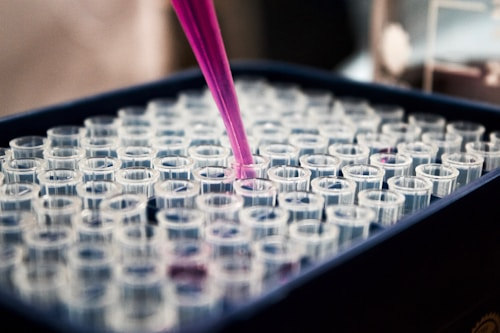
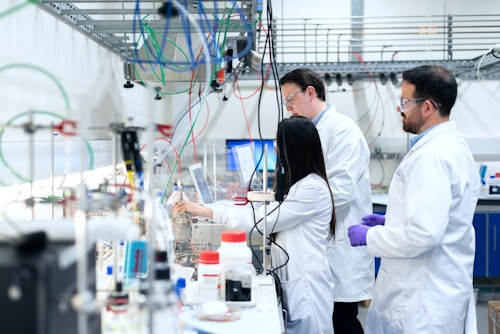
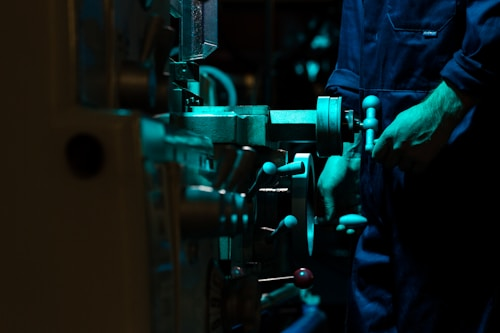

🔍
從實驗中學習，從觀察中成長
本校科學科致力於培養學生的科學素養，透過探究式學習，引導學生體驗科學探究的樂趣，並建立終身學習的能力。
透過多元化的學科活動，豐富學生的科學學習體驗，激發學習興趣，拓展科學視野。

定期舉辦主題式實驗工作坊，涵蓋化學、物理、生物等範疇。學生可動手配製溶液、觀察顯微標本、設計簡單電路，在安全環境中體驗科學探究的樂趣。
示例內容每年舉辦科學週，安排科學演示、問答比賽、模型製作等精彩活動，讓全校師生共同參與，營造濃厚的科學學習氛圍。
示例內容
組織學生到科學館、大學實驗室、自然生態區進行實地考察，將課本知識與真實情境連結，開闊科學視野。
示例內容積極組織學生參加各類 STEM 競賽，包括科學創意發明比賽、機械人競賽、編程比賽等，鍛鍊團隊合作與解難能力。
示例內容本校學生在各類科學比賽中屢獲佳績，以下為部分優異成績（示例）。
參賽學生：李小明、王大華
示例內容
參賽學生：陳美玲、張志強
示例內容參賽學生：林小紅、趙偉文
示例內容參賽學生：劉思琪、黃家明
示例內容